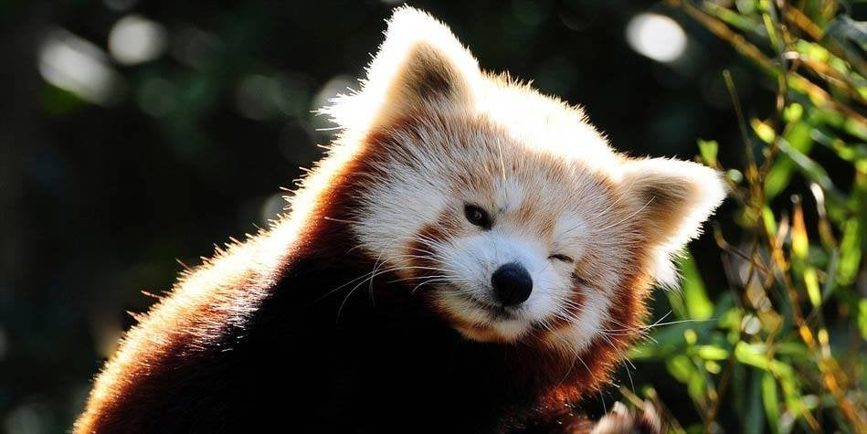
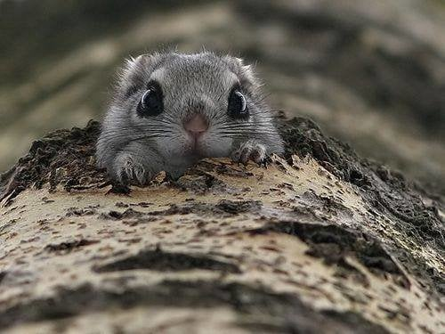

Nazywana jest ona także pandą czerwoną lub pandką rudą . Jej ogon może osiągać taką samą długość jak ona sama. Można ją spotkać Indiach, południowych Chinach i Birmie.
Panda mała jest wszystkożerna. Prowadzi nocny tryb życia, ale jest ona niestety gatunkiem narażonym na wyginięcie.
Więcej zdjęć pandy małej... :)
Szczekuszka jest ssakiem z rodziny szczekuszkowatych. Występuje głównie w zachodniej części Ameryki Północnej. Ma mały centymetrowy ogon, który jest prawie niewidoczny.
Szczekuszki gwizdają i wydają odgłosy przypominające szczekanie, stąd ta nazwa. Ich pożywieniem są trawy, mchy i porosty. Nie są na szczęście narażone na wyginięcie, więc możemy być o te słodziaki spokojni.

Więcej zdjęć szczekuszki... :)
Polatucha to wiewiórka z rodziny wiewiórkowatych. Oczywiste? Otóż nie! Wiewiórka ta jest inna, bowiem potrafi latać! Jest jedyną latającą wiewiórką, która występuje w Europie. Żyje głównie w lasach w Estonii, Finlandii i Łotwy.
W Polsce również ona występowała, dokładnie w Puszczy Białowieskiej, ale było to w XIX wieku. Polatucha nazywana jest czasem paralotniarzem, chyba nie trzeba tłumaczyć dlaczego.
Więcej zdjęć polatuchy... :)
Kuoka jest ssakiem z rodziny kangurowatych, który występuje głównie na południu i zachodzie Australii, ale także na wyspie Bald i Rottnest. Kuoki są zwierzętami roślinożernymi, które prowadzą nocny tryb życia. Żyją one około 5 lat.
Słodziaki te bardzo lubią kontakt z ludźmi, dlatego chętnie robią sobie z nimi... zdjęcia! Pomimo tego, że świetnie "dogadują" się z ludźmi to wciąż jednak są narażone na wyginięcie.

Więcej zdjęć kuoki krótkoogonowej... :)
Pręgowiec amerykański to gryzoń z rodziny wiewiórkowatych, który występuje we wschodniej części Ameryki Północnej. Można je najczęściej spotkać w tamtejszych lasach liściastych i krzewiastych biotopach.
Dobrą dla Nas informacją jest fakt, że zwierzęta te nie są płochliwe i śmiało mogą przebywać w towarzystwie ludzi.

Więcej zdjęć pręgowca amerykańskiego... :)
none
none